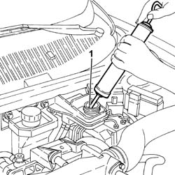
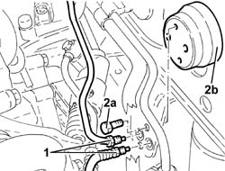
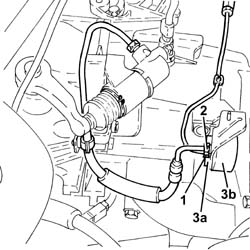
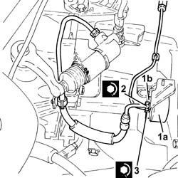
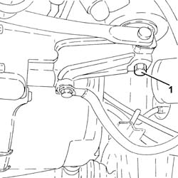
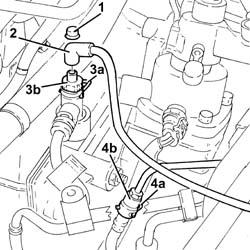
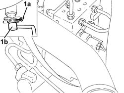
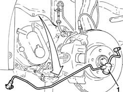
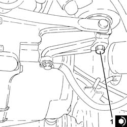

1820B58 clutch hydraulic circuit vibration damper - r+r
- Path
- Procedures > 18 CLUTCH > 1820 CLUTCH RELEASE CONTROLS > 1820B HYDRAULIC CLUTCH SYSTEM > 1820B58 clutch hydraulic circuit vibration damper - r+r
- Kind
- repair procedure (removal / refitting; the operation number is the code)
- Applies to
- engines: 2.5 V6, 1.9 JTD 8v , 1.9 JTD 16v, 2.4 JTD 10v, 2.4 JTD 20v; all production periods
- Interactive page
- https://sloeber94.github.io/elrnDB-a156/en/#/3237919
Applies to: engines: 2.5 V6, 1.9 JTD 8v , 2.4 JTD 10v; all production periods
 Removing
Removing
 Refitting
Refitting5530B52 Battery DRIP TRAY/SUPPORT - R.R.
1. Drain the brake-clutch fluid from the reservoir using a suitable syringe.

Applies to: engines: 2.5 V6, 1.9 JTD 8v , 2.4 JTD 10v; all production periods
1. Disconnect the fluid inlet and oulet connectors on the hydraulic clutch circuit vibration damper.
2. Undo the bolts (2a) and remove the hydraulic clutch circuit vibration damper.

Applies to: engines: 2.5 V6, 1.9 JTD 8v , 2.4 JTD 10v; all production periods
Refitting
RemovingFit the hydraulic clutch circuit vibration damper.and secure by tightening the bolts to the recommended torque.
 | Fastening | Component | Ø | Value (daNm) |
|---|---|---|---|---|
- | Bolt | HYDRAULIC CLUTCH VIBRATION DAMPER | M6 | 0.9 - 1.1 |
Connect the fluid supply and intake connectors to the vibration damper and tighten to torque.
| Fastening | Component | Ø | Value (daNm) |
|---|---|---|---|---|
- | Connector | HOSE FROM VIBRATION DAMPER | M12 | 1.7 - 1.9 |
1820B08 Clutch release HYDRAULIC SYSTEM - Bleeding air and restoring level
Applies to: engines: 1.9 JTD 16v; all production periods
Removing
RefittingProceed with removal 1016A10 sound-proofing cover - r + r
Proceed with removal 5530B10 battery - r+r
Proceed with removal 5530B52 Battery DRIP TRAY/SUPPORT - R.R.
Remove the protective cap on the master cylinder bleed valve.
Connect the collection system (pipe and reservoir) to the bleed valve on the clutch operating cylinder.
Operate the clutch pedal until the brake/clutch reservoir is completely empty.
1. Undo the connector and disconnect the vibration damper rigid inlet pipe, damper side.
2. Undo the connector and disconnect the flexible pipe from the vibration damper to the operating cylinder, damper side.
3. Undo the bolts (3a) and remove the hydraulic clutch system vibration damper (3b).

Applies to: engines: 1.9 JTD 16v; all production periods
Refitting
Removing1. Place the clutch hydraulic circuit vibration damper (1a) back in its housing and secure it with the bolts (1b).
2. Connect the pipe from the vibration damper to the operating cylinder, damper side and tighten the connector to the recommended torque.
| Fastening | Component | Ø | Value (daNm) |
|---|---|---|---|---|
2 | Connector | HOSE FROM VIBRATION DAMPER | M12 | (Vibration damper side) 1.4 ÷ 2.2 |
3. Connect the vibration damper rigid inlet pipe, damper side and tighten the connector to the recommended torque.
| Fastening | Component | Ø | Value (daNm) |
|---|---|---|---|---|
3 | Connector | RIGID INLET PIPE TO VIBRATION DAMPER | M12 | (Vibration damper side) 1.4 ÷ 2.2 |

Applies to: engines: 1.9 JTD 16v; all production periods
Bleed the air and top up the level in the hydraulic clutch system 0010T67 hydraulic clutch system bleed air .
Top up the brake-clutch fluid level 0010T65 hydraulic brake system bleed air .
Proceed with refitting 5530B52 Battery DRIP TRAY/SUPPORT - R.R.
Proceed with refitting 5530B10 battery - r+r
Proceed with refitting 1016A10 sound-proofing cover - r + r
Applies to: engines: 2.4 JTD 20v; all production periods
Removing
RefittingPosition the vehicle on the ramp
Proceed with removal 1016A10 sound-proofing cover - r + r
Drain the air conditioner coolant circuit - 0010T84 coolant for air conditioning system dehydrate and recharge .
Proceed with removal 5530B10 battery - r+r
Proceed with removal 5530B52 Battery DRIP TRAY/SUPPORT - R.R.
Proceed with removal - 5530B54 battery cover - r+r
Proceed with removal 7055B54 under-engine guard - r r
Proceed with removal 4450B02 left front wheel r r
Proceed with removal - 7055B90 Left front WHEEL ARCH LINER - R.R.
Proceed with removal 5040A72 evaporator outlet pipe - r r
Position a hydraulic jack under the gearbox
1. Undo the bolt fixing the power unit gearbox side rigid support to the flexible mounting.
Lower the hydraulic jack until the drive shaft joint is resting on the front suspension crossmember.
Remove the hydraulic jack from under the gearbox

Applies to: engines: 2.4 JTD 20v; all production periods
1. Remove the cap on the bleed valve.
2. Connect the collection system (pipe and reservoir) to the bleed valve on the hydraulic clutch actuator.
3. Lift the retaining clip (3a) and withdraw the bleed device (3b) as much as necessary.
Let the hydraulic clutch system drain completely.
4. Raise retaining clip (4a) and disconnect the clutch hydraulic circuit vibration damper (4b), flexible pipe side.

Applies to: engines: 2.4 JTD 20v; all production periods
1. Raise retaining clip (1a) and disconnect the clutch hydraulic circuit vibration damper (1b), master cylinder side.

Applies to: engines: 2.4 JTD 20v; all production periods
1. Remove the hydraulic circuit vibration damper by withdrawing from the wheel compartment.

Applies to: engines: 2.4 JTD 20v; all production periods
Refitting
RemovingPlace the hydraulic clutch circuit vibration damper back in its housing, connect it on the master cylinder side and secure it using the retaining clip.
Connect the clutch hydraulic circuit vibration damper, flexible pipe side - and secure with the retaining clip.
Position a hydraulic jack under the gearbox
Using the hydraulic jack, place the gearbox side rigid power unit support in contact with the flexible mounting.
1. Undo the bolt fixing the gearbox side rigid power unit support to the flexible block to the specified torque.
| Fastening | Component | Ø | Value (daNm) |
|---|---|---|---|---|
1 | - | - | - | - |
Remove the hydraulic jack from under the gearbox

Applies to: engines: 2.4 JTD 20v; all production periods
Proceed with refitting 5040A72 evaporator outlet pipe - r r
Proceed with refitting - 7055B90 Left front WHEEL ARCH LINER - R.R.
Proceed with refitting 4450B02 left front wheel r r
Proceed with refitting - 0010T64 brake and or clutch fluid check level and top up as necessary
Proceed with refitting 0010T67 hydraulic clutch system bleed air
Proceed with refitting 7055B54 under-engine guard - r r
Proceed with refitting - 5530B54 battery cover - r+r
Proceed with refitting 5530B52 Battery DRIP TRAY/SUPPORT - R.R.
Proceed with refitting 5530B10 battery - r+r
Fill the air conditioner coolant circuit - 0010T84 coolant for air conditioning system dehydrate and recharge .
Proceed with refitting 1016A10 sound-proofing cover - r + r
Remove the car from the ramps.
Topics linked from this page (9)
- 0010T65 hydraulic brake system bleed air
- 0010T67 hydraulic clutch system bleed air
- 1016A10 sound-proofing cover - r + r
- 1820B08 Clutch release HYDRAULIC SYSTEM - Bleeding air and restoring level
- 4450B02 left front wheel r r
- 5040A72 evaporator outlet pipe - r r
- 5530B10 battery - r+r
- 5530B52 Battery DRIP TRAY/SUPPORT - R.R.
- 7055B54 under-engine guard - r r